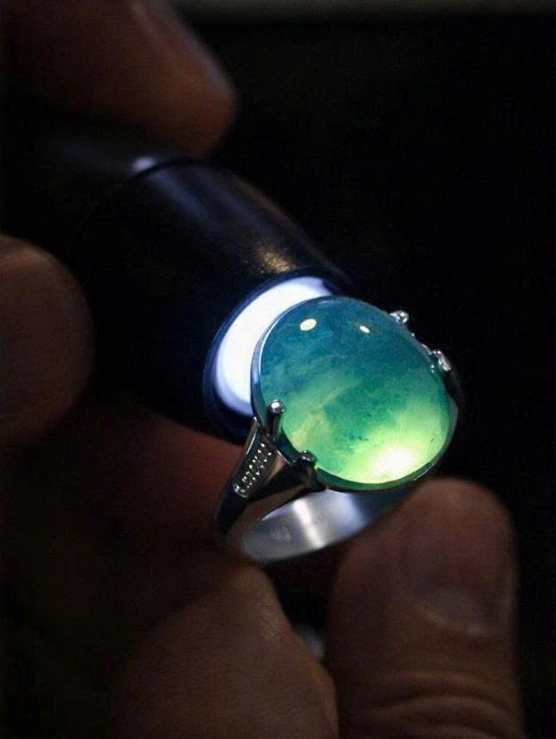
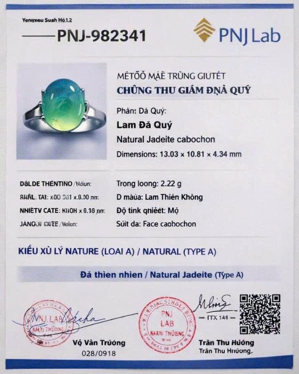

Nhẫn ngọc phỉ thúy Lam Thiên Không - Mã số JADE-01
Sản phẩm đại diện cho dòng ngọc phỉ thúy băng chủng tự nhiên hoàn toàn không qua xử lý hóa chất (Type A). Nước ngọc xanh lam trong suốt tựa bầu trời thu hút mọi góc nhìn khi có ánh sáng chiếu qua.


Bảng thông số giám định vật lý
| Tiêu chí kiểm định | Kết quả đo lường thực tế |
|---|---|
| Tên khoáng vật | Jadeite tự nhiên (Type A) |
| Trọng lượng (Carat) | 2.22 g |
| Độ cứng Mohs | 6.5 - 7.0 |
| Chiết suất (Refractive Index) | 1.66 (Điểm đo chuẩn) |
| Tỷ trọng (Specific Gravity) | 3.34 g/cm³ |
| Phổ hấp thụ hồng ngoại (FTIR) | Không có pic hấp thụ của chất nhựa polyme |